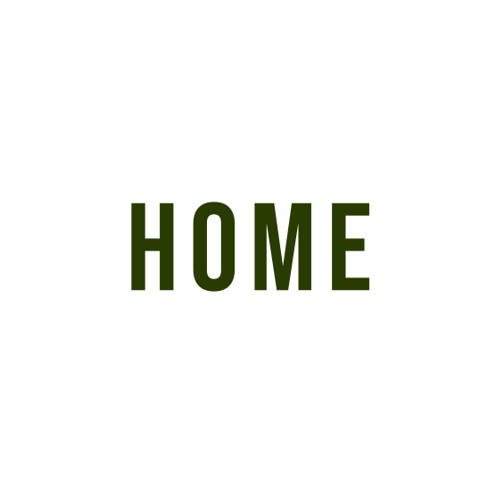
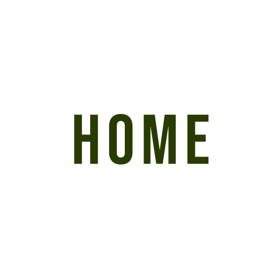

My name is Ryan. I am a graphic designer, an inventor, and a makeup artist. I have a wide range of computer-related experience including 3D modeling, animation, filmmaking, programming, and web design. I have experience in Autodesk Maya, Autodesk Inventor, Adobe Illustrator, Adobe Photoshop, Adobe InDesign, and Final Cut Pro.
I also enjoy working with my hands and have experience in HVAC, carpentry, and plumbing.
I enjoy stargazing, fishing, playing volleyball, video games, and would one day love to try glass blowing.
The main purpose of this website is to display my graphic design work. I design logos, business cards, banners, print advertisements, website elements, postcards, and typography. Take a look at my contact page if you are interested in an estimate for your project!